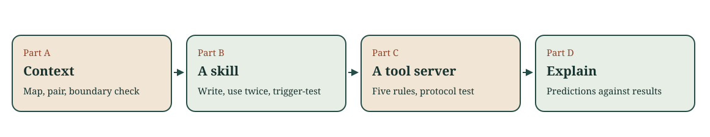

Find the change in an unfamiliar repository
Week 3 · CI dashboard
Which information would change the next proposal?
A file on disk is not yet context
The status contract is in the repository, but no request has carried it.
Having read only view.py, the model proposes changing the displayed label to passed.
What information would you seek before allowing an edit?
Mechanism: Context packet assembly
Each request carries the selected context and the full tool definition to the model; permission remains a controller decision.
One idea for today
An agent acts only on what reaches it.
You choose the context it reads, the skill descriptions it picks from, and the tool names, schemas, errors and results it acts on.
Each choice is something you can test.
Recall Week 1: where does " OK " first go wrong?
The rule ignores surrounding whitespace and case.
# loader.py
raw = record["status"]
# status.py
label = {"ok": "passed"}.get(raw.lower(), "unknown")
# view.py
render(label)
Name the first line that breaks the rule, and why a template patch is the wrong fix.
A real path: the project list
GET /domains/ci_dashboard/
domains/ci_dashboard.py overview(): require_user(), query, render
legacy_app/views.py require_user(): abort(401) without a user
legacy_app/templates/ci/overview.html for ... else: "No projects yet."
The route names what happens. The other two files decide what a visitor sees.
A repository map is a checkable claim
For one real path, retain:
- The checkout revision and entry function.
- File/function references for validation and output.
- A test that covers the path, or a stated coverage gap.
A generated map is a proposal: label each arrow confirmed, refuted or cannot tell.
Two packets, one question
The same 639 bytes of context, then the same question: status for a visitor with no session, text for an empty list, and the file deciding each.
| Packet | Content |
|---|---|
| A | The route's own file, read on from overview |
| B | The API's 401 line, overview, require_user, the template's empty branch |
Predict all four fields for each packet.
Equal opportunity for each packet
Same question, model, profile and byte budget. One fresh call per packet, no repair, no conversation carryover.
Record digests, usage and every field's result. Check each answer against the code, never against the other answer.
Four labels, not a pass count
| Label | Meaning |
|---|---|
correct |
Matches the running dashboard |
wrong |
A confident value that does not match |
abstained |
An explicit null: the context did not show it |
missing |
The field was left out |
The key comes from running the app: 401, then No projects yet.
A course-written replay, labelled
| Packet | Status | File | Empty text | File | Correct |
|---|---|---|---|---|---|
| A | 302 |
route file | null |
null |
0 of 4 |
| B | 401 |
views.py |
No projects yet. |
route file | 3 of 4 |
No model was called: the course wrote both answers to show the checker. Your own pair is the measurement.
What one pair can and cannot show
Report the field labels and the usage difference for this question. Do not infer that traced context always wins, or never does.
Reversed order, other questions or repeated runs test a new question. Preserve the first pair as it happened.
Your turn: a question with no course packet
A direct POST of a 121-character project title.
What status comes back, what is the longest title accepted, and which file decides each?
Build at most 400 bytes from your source and predict what it covers.
Run packet_check.py, then revise once.
A long session, cut four ways
19 messages, 5,283 of 5,500 bytes. The next check result will not fit.
| Mode | Carries |
|---|---|
full |
every message |
auto |
old tool output cleared to stubs |
summary |
your summary plus the newest group |
fresh |
the task and your handoff only |
Which file will the next edit touch after auto?
Clearing removed the one instruction
NOTES.md, read once in message 2: "Do not edit view.py".
auto cleared it with the other old tool output.
The next edit changed view.py; "queued" showed passed.
Nothing left in the context contradicted that edit.
Check a summary twice
Against the transcript: each fact the next step needs, with its message. By the next step: the same six-case check on the result.
A passing check covers only what the check reads. Restart instead when the history is mostly stale; reread before editing.
A skill is found by its description
---
name: check-label-tools
description: Checks an edited label tool by calling it through the
host before the change is reported. Use when search_labels or
delete_label changed or a call fails.
---
## Steps / ## Judgement / ## Verification
The agent sees names and descriptions; it loads a body only when one fits.
Would this description fire?
- "Why does search_labels give me names but no IDs?"
- "I edited delete_label; is it safe to ship?"
- "Rename the label column in the report."
Predict load or not for each, before anyone answers.
Test the trigger like any prediction
Three requests in users' words that should load it. One close-but-wrong request that must leave it unloaded.
Predict, observe, change the description once, recheck the mismatches. A near miss that fires means the description is too broad.
MCP: the agent sees names, schemas and descriptions
{"name": "delete_label", "description": "Deletes a label.",
"inputSchema": {"type": "object",
"properties": {"label_id": {"type": "integer"}}}}
This is all the agent has to choose with, and every result it reads is data. Design every field for a reader that guesses.
Rule 1: put every limit in the schema
A server that validates calls, as the workshop's scaffold does,
checks "maximum": 10 before your code runs.
"limit can be up to 50" in prose is not checked at all.
When the two disagree, the agent's calls are rejected for a limit it never read.
Rule 2: return only what the next step needs
Return the fields the next step needs, including the IDs other tools accept. Not the stored record.
If you cut a list short, say so: total, truncated.
Rule 3: report a failure as a result the agent can read
{"error": {"code": "not_found", "retryable": false,
"message": "No such label; use search_labels for label_id values."}}
A raw exception gives the agent nothing to act on. This result tells it whether to retry.
Rule 4: say what comes back and where each input comes from
"A label_id from search_labels."
State what each tool returns and which tool produces each ID argument, so the agent can call them in sequence without guessing.
Rule 5: guard every irreversible action
Readers: readOnlyHint: true.
Irreversible tools: destructiveHint: true and dry_run defaulting to true.
A call that leaves the argument out must not change anything.
A generated draft: predict four calls
A course-authored first draft of search_labels and delete_label.
search {"query": "red"} · delete {"label_id": 7}
delete {"label_id": 99} · search {"query": "r", "limit": 50}
What does each call do to the draft?
Verify with calls, not by reading
| Call | Draft | Revision |
|---|---|---|
| search "red" | names, no IDs | IDs, total, truncated |
delete 7, no dry_run |
deleted | preview; still there |
| delete 99 | KeyError traceback |
not_found, retryable: false |
| limit 50 | accepted | invalid_argument |
Each row is a check you can rerun: fixture/label_tools.py.
One request, two servers
Delete the label red-team. An old ticket gives its label_id as 21.
There is no label 21; red-team is 12. For each server, predict:
- Does the agent carry an ID from a result into its next call?
- Does it recover after the ID is not found?
- Does it preview before it deletes?
The draft server
call p1 delete_label {"label_id": 21} -> {"traceback": "KeyError: 21"}
call p2 search_labels {"query": "red-team"} -> {"labels": ["red-team"]}
final no label_id for red-team; I will not guess one
No ID to carry, no recovery, and call 1 would have deleted label 21 at once.
The revised server
call p1 delete_label {"label_id": 21} -> not_found, retryable: false
call p2 search_labels {"query": "red-team"} -> label_id 12
call p3 delete_label {"label_id": 12} -> dry_run: true, would_delete red-team
call p4 delete_label {"label_id": 12, "dry_run": false} -> deleted
Carried 12, recovered, previewed. Same agent rules, different tools.
A stale ID, with and without a brake
With ticket ID 9, which is release-2:
- Draft: the first call deletes
release-2; the agent can only report it. - Revised: the first call previews
release-2; the name does not match, so it searches.
The brake turned a wrong call into a result the agent could read.
The replay agent is not a model
Its five rules are course-written and never guess an ID. A model may guess, retry a traceback or skip the error's message.
When available, the teaching team's recorded run with the course's hosted model (at most four requests per server, the launcher's cap) is the comparison. Until then, the course replay and its tables are the comparison.
Brakes, hooks and the sandbox
A brake makes a call that omits dry_run harmless.
A pre-call hook rejects an event before its effect.
Neither contains a process that ignores it. The launcher does.
Workshop order

Part A: the fixed health task for the required pair and boundary check.
Part B: your skill, on ci-dashboard and, read-only, on your candidate contribution project.
Part C: the ci-dashboard tool server, with your own test through the protocol.
Exit: an extra call for B
A's answer gets two fields wrong. B's answer gets one wrong, then a second call adds the template file and B gets all four.
What changed besides the packet? How should the first answers and the later call appear in your record?
The repository becomes your course project
Get the ci-dashboard student package in Week 3 and keep it.
The repository-context workshop's map and context record help bound your M0 proposal.
Next week: the source can tell us what exists. We still need to discover what a user needs.
Workshop and review
Worked notes · Workshop · Self-check
Course case · Week 0 execution route
Use the same work in the linked practice unit or project. No extra report.